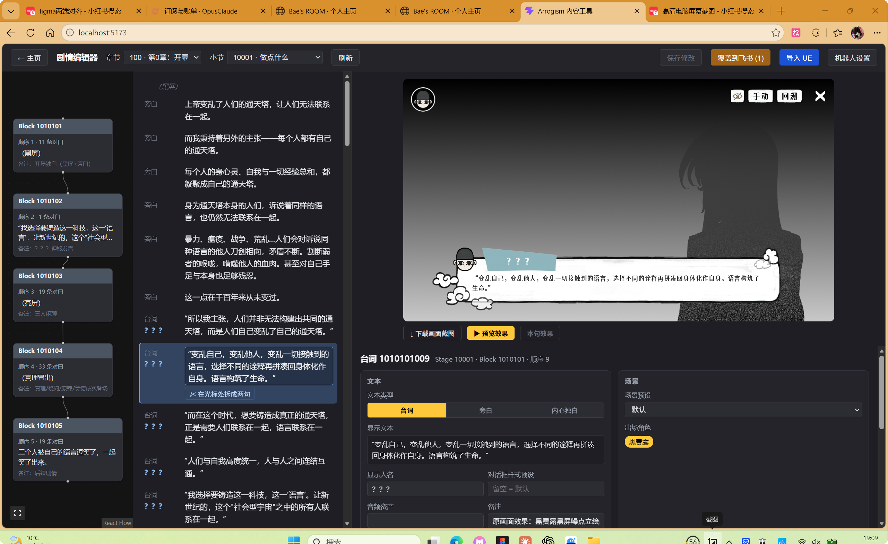
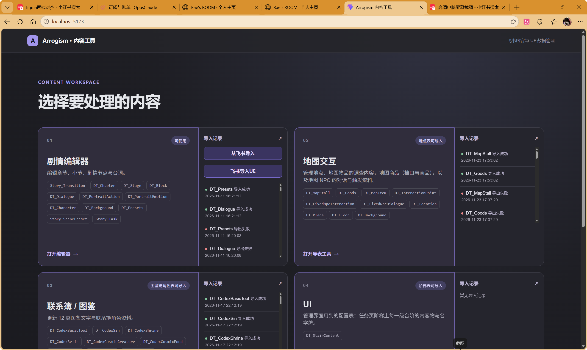

自负
内容工具
<自负>游戏制作配套工具集
- {剧情编辑器}
- {一键导表}
- {自动化流程}


{ 工具介绍 }
本作品是《自负》项目的配套内容工具。主要分为剧情编辑器与表格内容导入两个部分。
工具以飞书表格为内容源。
A剧情编辑器可将剧情、地图、UI、图鉴等模块的原始表格进入工具中进行剧情效果预览并编辑修改；
B导表工具则可以实现配置表修改后通过工具的自动化流程完成UE内data表的重新导入，实现一键更新。
{ 痛点转化 }
- 01
剧情分散在飞书多张表中，Block 和台词按小节分别存放。
按章节和小节选择，一次读出整个小节。
- 02
仅仅通过表格看不到立绘、情绪气泡、震动等画面预览效果。
逐句实时预览，作为 UE 画面制作的参照。
- 03
UE 导入表格的流程繁琐，人工手动导入容易校验出错。
在工具中设计自动化流程，实现一键导入。
- 04
各个模块的配置表格数量较多，需要有统一管理并记录导表数据的路径。
在工具内对表格进行分模块整理，记录每次导入表格的导入时间、更新内容等信息。
飞书读取 → 选择 Block / 台词 → 配置文本与演出 → 实时预览 → 保存草稿 → 覆盖回原表OR导入UE数据表
- 提示文字：记录策划提醒或段落说明，帮助配置和检查剧情，不显示给玩家。
- 当剧情需要暂时交还玩家操作，例如前往另一处场景或与角色互动，就在对应 Cue 行关联任务。任务可配置类型、触发对象或区域、目标 Block，以及画面中的任务提示；完成后再接续剧情。
- 转场：当两句文本之间需要特殊过渡，可以在 Cue 行选择转场预设，让转场发生在指定位置。

以预设id的形式统一配置
（可多选）
{ B 表格导出工具 }
按内容模块选表，将飞书配置转换并导入 UE，保留每次更新的结果
- 01飞书源表
- 02按模块选表
- 03导出 JSONexportAll
- 04UE DataTableArrReimportAllTables
核心功能
- 01按模块选表
剧情、地图交互、联系簿／图鉴与 UI 分区管理；可选择本次更新的表。
- 02查看数据去向
展示飞书工作表链接和 UE DataTable 路径；已接入的表可预览内容。
- 03转换并导入
将选中的飞书数据导出为 JSON，再刷新并保存对应的 UE DataTable。
- 04追踪更新结果
按表查看最近导入时间、状态、更新说明和历次操作结果。
更新记录
每次导入按表生成记录，并关联同一批次：保留表格名称、北京时间、导入结果与更新说明。按模块或单表回看，核对哪次更新已进入游戏。
批次 → 时间 → 成功／待导入／失败 → 更新说明
导入保护
检测到 UE 编辑器仍在运行时，跳过资产重导入，仅保留已转换的 JSON 和待导入状态，避免编辑器内旧数据覆盖新数据。
当前模块
- 01剧情
- 02地图交互
- 03联系簿／图鉴
- 04UI
- 05美术素材导入